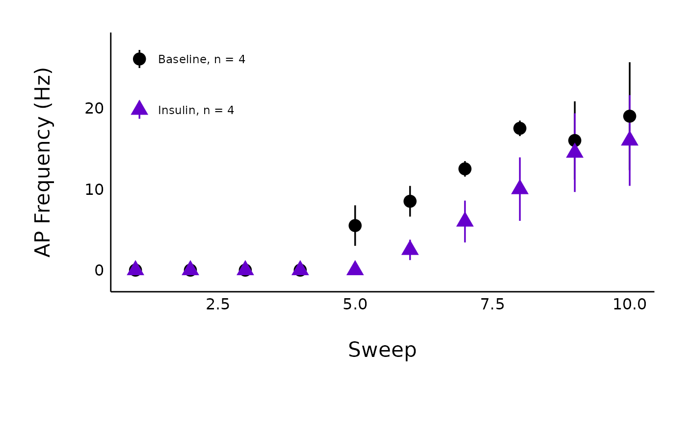

Plot action potential frequency curves for a single treatment
Source:R/Plot-data.R
plot_AP_frequencies_single_treatment.RdThis function allows you to generate a plot of action potential frequency (y-axis) for each current injection (x-axis), coloured by state (baseline or post-hormone/treatment).
Usage
plot_AP_frequencies_single_treatment(
data,
plot_treatment,
plot_category,
included_sexes = "both",
male_label = "Male",
female_label = "Female",
large_axis_text = "no",
baseline_label = "Baseline",
hormone_added,
test_type,
significance_display_method = "p-values",
geom_signif_size = 5,
geom_signif_y_spacer = 1,
geom_signif_family = "",
p_adjust_method = "holm",
save_plot_png = "no",
treatment_colour_theme,
baseline_shape = 16,
post_treatment_shape = 17,
save_output_as_RDS = "no",
theme_options,
ggplot_theme = patchclampplotteR_theme()
)Arguments
- data
Action potential frequency data imported through
add_new_cells()withdata_type == "AP_count"- plot_treatment
A character value specifying the treatment you would like to plot (e.g. "Control").
plot_treatmentrepresents antagonists that were present on the brain slice, or the animals were fasted, etc.- plot_category
A numeric value specifying the category, which can be used to differentiate different protocol types. In the sample dataset for this package,
plot_category == 2represents experiments where insulin was applied continuously after a 5-minute baseline period.- included_sexes
A character value ("both", "male" or "female"). Useful if you want to have a plot with data from one sex only. Defaults to "both". If you choose a single sex, the resulting plot will have "-males-only" or "-females-only" in the file name. WARNING!! If you choose "male" or "female", you MUST ensure that the
t_test_dfcontains data that has been filtered to only include one sex. Otherwise, the significance stars will represent both sexes and it will be inaccurate.- male_label
A character value used to describe how males are encoded in the
sexcolumn of the dataframe used indata. Examples include "Males", "Male", "male", "males", "M", etc. Defaults to "Male".- female_label
A character value used to describe how females are encoded in the
sexcolumn of the dataframe used indata. Examples include "Females", "Female", "female", "females", "F", etc. Defaults to "Female".- large_axis_text
A character ("yes" or "no"). If "yes", a ggplot theme layer will be applied which increases the size of the axis text.
- baseline_label
A character value for the x-axis label applied to the pre-hormone state. Defaults to "Baseline".
- hormone_added
A character value that will be used as the label over the line annotating the period when a hormone was applied. Examples include "500 nM Insulin", "CCK + Leptin", and "Insulin". If you applied a high-frequency stimulation (HFS) protocol instead, write "HFS", and an annotation arrow will be added instead.
- test_type
A character (must be "wilcox.test", "t.test" or "none") describing the statistical model used to create a significance bracket comparing the pre- and post-hormone groups.
- significance_display_method
A character value ("stars" or "p-value") describing how significance values should be displayed. These annotations will not appear if
test_typeis "none".)- geom_signif_size
A numeric value describing the size of the text annotations (significance stars or p-values) on the plot. Defaults to
5.- geom_signif_y_spacer
A numeric value describing the vertical spacing applied to the significance markers. Defaults to 1, but can be set to a higher value if the p-values or significance stars are too close to the error bars.
- geom_signif_family
A character value describing the font family used for the p-value annotations used by
ggsignif::geom_signif().- p_adjust_method
This argument is directly related to
p.adjust.methodinrstatix::t_test. This is the method used to adjust the p-value in multiple pairwise comparisons. Allowed values include "holm", "hochberg", "hommel", "bonferroni", "BH", "BY", "fdr", "none" (although "none" is not recommended).- save_plot_png
A character ("yes" or "no"). If "yes", the plot will be saved as a .png using ggsave. The filepath depends on the current type, but they will all go in subfolders below Figures/ in your project directory.
- treatment_colour_theme
A dataframe containing treatment names and their associated colours as hex values. See sample_treatment_names_and_colours for an example of what this dataframe should look like.
- baseline_shape
A numeric value describing the shape used for the baseline data. Defaults to 16, which is a circle.
- post_treatment_shape
A numeric value describing the shape used for the post-treatment/post-protocol data. Defaults to 17, which is a triangle.
- save_output_as_RDS
A character ("yes" or "no") describing if the resulting object should be saved as an RDS file in the folder 'Data/Output-Data-from-R'. The function will automatically create this folder if it doesn't already exist.
- theme_options
A dataframe containing theme options. See sample_theme_options for an example of what this dataframe should look like.
- ggplot_theme
The name of a ggplot theme or your custom theme. This will be added as a layer to a ggplot object. The default is
patchclampplotteR_theme(), but other valid entries includetheme_bw(),theme_classic()or the name of a custom ggplot theme stored as an object.
Value
A ggplot object. If save_plot_png == "yes", it will also generate
a .png file in the folder Figures/Action-potentials relative to the
project directory, with the treatment and category included in the filename.
Examples
plot_AP_frequencies_single_treatment(
data = sample_AP_count_data,
plot_treatment = "Control",
plot_category = 2,
baseline_label = "Baseline",
hormone_added = "Insulin",
included_sexes = "both",
treatment_colour_theme = sample_treatment_names_and_colours,
large_axis_text = "no",
test_type = "wilcox.test",
p_adjust_method = "holm",
theme_options = sample_theme_options,
save_plot_png = "no"
)
#> Warning: Removed 4 rows containing missing values or values outside the scale range
#> (`geom_text()`).
